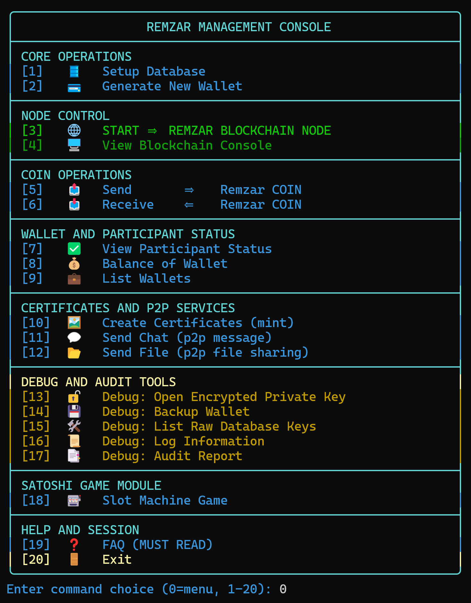
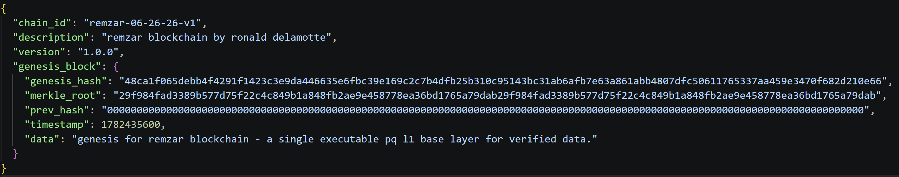
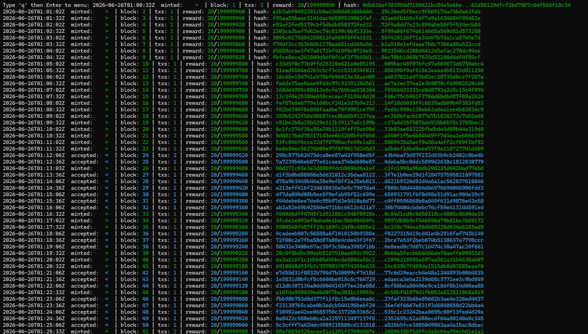

Single-Binary Operation
The node, wallet tools, validator workflow, diagnostics, and audit utilities are designed to operate from one executable instead of a collection of separate services.
Remzar is a Rust-based Layer-1 blockchain designed to be simple to operate, bounded to validate, locally auditable, energy-efficient, and prepared for post-quantum cryptographic requirements.
Remzar is a sovereign base-layer blockchain built around one core idea: a public blockchain should not require hidden services, complicated infrastructure, or energy-race mining to be useful. A Remzar node is designed to run from a single compiled Rust binary that includes wallet creation, encrypted key storage, local database setup, peer-to-peer networking, validator registration, block production, transfers, chain inspection, diagnostics, and audit exports.
The node, wallet tools, validator workflow, diagnostics, and audit utilities are designed to operate from one executable instead of a collection of separate services.
Blocks, transaction counts, transaction buffers, timestamp windows, validator timing, and serialized data paths are controlled by explicit protocol limits.
Chain data, logs, rewards, transaction batches, and audit reports are stored locally and can be inspected without relying on a centralized explorer.
Many blockchain systems place a gap between public participation and the practical work required to operate a node. Remzar is designed around the opposite assumption: users, validators, merchants, and organizations should be able to run infrastructure directly, inspect what the node is doing, and verify the chain with clear local tools.
Remzar keeps its base protocol understandable by using clear constants for timing, block limits, validator participation, cryptographic commitments, and monetary issuance.
Remzar uses Proof of Registry, an energy-efficient validator participation model based on explicit registry membership, deterministic eligibility, leader selection, validator warmup, quarantine, heartbeat renewal, lease expiry, dead-peer eviction, and deterministic failover rounds.
Validators must be known to the registry before they can propose blocks. Eligible validators are selected from shared chain state, so honest nodes can independently verify whether a block was produced by the correct leader for a slot.
Remzar does not use an electricity-driven mining race. Its short local pacing puzzle acts as proposer rate control, while the outer chain cadence remains organized around 30-second slots.
During early network growth, validator admission may use bootstrap safety controls. The long-term direction is transparent, rule-driven onboarding while preserving bounded validation and operational simplicity.
Remzar’s cryptographic design centers block attestation around ML-DSA-65, a post-quantum digital signature scheme. Instead of requiring one post-quantum verification for every transaction in a block, Remzar commits transaction batches through Merkle roots and signs the block-level commitment once.
Each block batch is authenticated with one post-quantum signature at the block level, keeping signature verification bounded as block transaction counts grow.
Transactions are hashed into transaction IDs, committed into a Merkle root, and verified through deterministic inclusion proofs when needed.
Wallet storage is designed around local ownership, passphrase hardening, authenticated encryption, and memory-hygiene discipline.
Remzar is designed to make the full node lifecycle accessible from one guided command-line workflow. The same program exposes wallet generation, database setup, node operation, transfers, validator status, chain inspection, logs, and audit exports.

REMZAR is the native asset of the Remzar Layer-1 blockchain. The current monetary policy is designed to be simple to inspect and reproduce: maximum supply is capped at 200 million ZAR, genesis is rewardless, and issuance comes from validator block rewards only.
Remzar’s maximum supply is capped at 200,000,000 ZAR under the current protocol configuration.
The current configuration has no founder mint, treasury mint, staking bucket, development reserve, or gaming allocation.
Supply enters circulation through validator block rewards until the maximum supply is exhausted.
The reward ladder begins at 20 ZAR per block, steps down through fixed 500,000-block eras, and then stabilizes at 1 ZAR per block until the supply cap is reached by the year 2200 C.E.
Remzar treats auditability as part of the base node design. Blocks, transaction batches, rewards, logs, validator information, Merkle roots, and cryptographic fingerprints can be exported through built-in tooling. This allows operators, merchants, exchanges, and organizations to inspect local chain activity without depending entirely on third-party explorers.
Remzar uses RocksDB-backed storage segmented by chain state, accounts, transactions, rewards, logs, peer data, registry state, and canonical chain views.
Operators can export bounded chain ranges and logs with hashes, Merkle roots, validator identifiers, reward information, transaction summaries, and cryptographic fingerprints.
Before the live chain begins producing numbered blocks, Remzar starts from a fixed genesis block. This genesis block defines the first cryptographic fingerprint of the chain, the chain identifier, the initial Merkle root, the zero previous hash, and the base data statement for the Remzar network.

This genesis block is the starting point of the Remzar chain. It appears before the block verification snapshot for blocks 1 through 50, showing the fixed origin state from which later blocks are built and verified.
Remzar exposes block activity directly through the node console, allowing operators to view minted and accepted blocks, block heights, transaction counts, reward progression, and block hashes in real time.

This snapshot is the official Remzar block 1 to 50 for local block visibility. Operators can use block height, transaction count, reward state, and hash output as part of local verification and audit review.
The protocol uses explicit limits for block size, transaction count, transaction buffers, timestamp skew, slot drift, validator renewal, and peer eviction.
Remzar’s goal is not to hide complexity behind hosted infrastructure. Its goal is to keep the base layer understandable: one program, one chain, bounded validation, deterministic consensus, transparent issuance, post-quantum-oriented cryptography, and repeatable auditability.